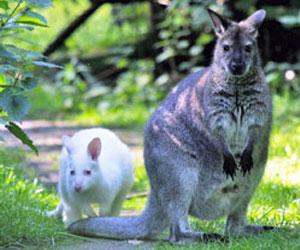
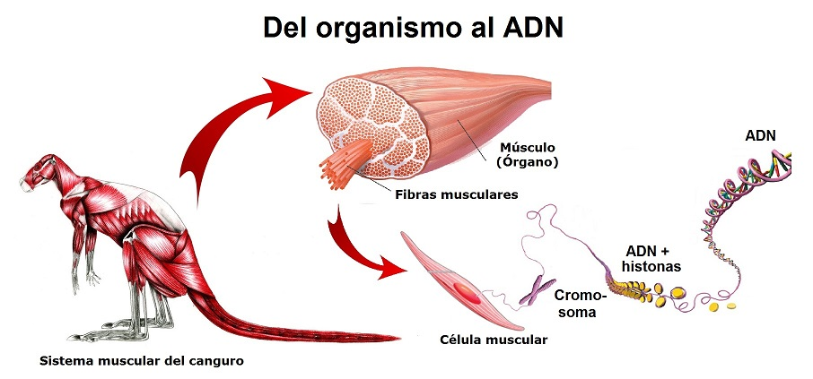
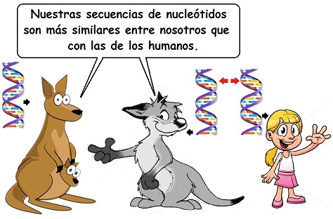
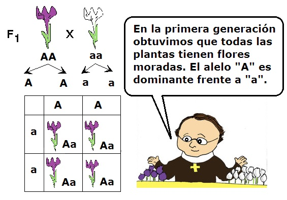
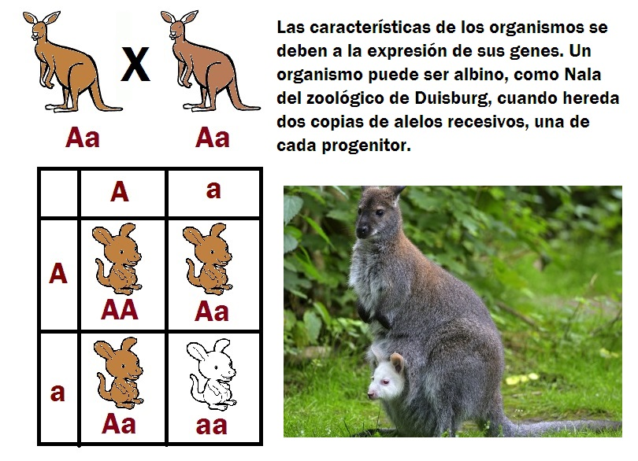
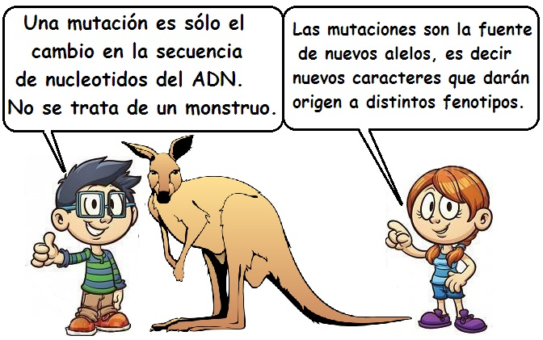
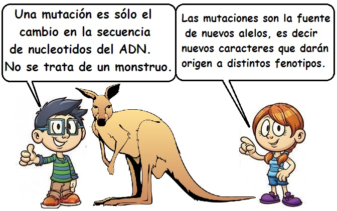

La asombrosa selección natural - Unidad 1
Un canguro blanco y la fábrica de proteínas
Nala es un canguro que nació a finales de 2013 en el zoológico de Duisburg en Alemania. La particularidad de este canguro es que es completamente blanco. Nala no tiene pigmentos en su pelo, uñas o en el iris de sus ojos. Los ojos de esta canguro se ven rosados. Los canguros y ualabíes, que son marsupiales originarios de Australia, usualmente son de color pardo o grisáceo. Los animales que, como Nala son completamente blancos, se denominan albinos. La probabilidad de que venga al mundo un canguro albino es de una entre 20.000.
Pero, ¿cómo se produce el albinismo? Para poder responder a esta pregunta tendremos que viajar muy al interior del cuerpo de Nala.
El canguro, como todo animal pluricelular, es muy complejo. El organismo del canguro está formado por sistemas, estos a su vez por órganos, los órganos por tejidos, y los tejidos por células. Las células son las unidades básicas de todo ser vivo, y contienen una molécula maravillosa: El ADN.
El ADN es una macromolécula porque está formado por la unión de otras moléculas. Una serie de unidades repetidas llamadas nucleótidos. La molécula del ADN está formada por una cadena doble de nucleótidos que giran alrededor de un eje para dar su forma de hélice característica.
Y la secuencia de esos nucleótidos guarda información que es de gran utilidad para las células y el organismo en general. Los nucleótidos poseen cuatro bases nitrogenadas: Adenina, Guanina, Timina y Citosina. Estás las representaremos por sus letras iniciales: A, G, T y C.
En la cadena doble del ADN estas bases se organizan en pares. La adenina siempre se une con la timina, y la citosina con la guanina. Al ver la larga cadena del ADN veremos una secuencia de estos pares de bases que se pueden extender millones de veces. El orden de las secuencias de los nucleótidos varía y esto es muy importante.

Pues bien, estas “letras” (A, C, T y G) son el alfabeto con el que se guarda la información para hacer y regular las células y los organismos completos. Todos los seres vivos, desde las bacterias más pequeñas hasta las enormes ballenas tienen ADN en sus células. Las secuencias de nucleótidos del ADN del canguro Nala son más similares a las de otro canguro, que a las de un humano; y las secuencias de una persona son más similares a las de otra persona que a las de un canguro.
Ya se tiene claro que todos los seres vivos tienen ADN, que el ADN está formado por una secuencia de nucleótidos, y que estas secuencias guardan información. Pero, ¿cómo la información del ADN se expresa para dar una característica?
La respuesta se encuentra también al interior de las células. El ADN, que se encuentra en el núcleo de las células eucariotas. El ADN para poder expresarse debe desenrollarse, y con base en los nucleótidos de una de sus cadenas se fabrica o sintetiza una molécula de ARN. La molécula de ARN es similar a la del ADN, con la diferencia de tener una sola cadena, tener uracilo en lugar de timina y el de tener el azúcar ribosa, en lugar de la desoxirribosa del ADN. El proceso de pasar la información del ADN a una molécula de ARN se denomina transcripción.

Esta molécula de ARN que se forma en el núcleo saldrá de este y se dirigirá al citoplasma a unas estructuras llamadas ribosomas. EL ARN que va con la información se denomina ARN mensajero. Una vez en el ribosoma el ARN será leído cada tres nucleótidos, o cada “tres letras” las cuales se llamarán un “codón”. Cada codón indica que molécula particular de aminoácido va en la secuencia y será pegada a otro aminoácido. A medida que el ribosoma va leyendo el ARN de codón en codón, se va formando una cadena de aminoácidos. Las células tienen veinte tipos diferentes de aminoácidos para escoger. Al terminar el trabajo, el ribosoma habrá sintetizado una proteína. Las proteínas son macromoléculas formadas por la unión de aminoácidos.

El proceso de formación de las proteínas a partir de la lectura del ARN se conoce como traducción. Tanto la transcripción como la traducción hacen parte de la síntesis de proteínas.
Volviendo al caso de Nala, el canguro albino, hay que mencionar que su madre ni su padre son albinos. ¿Cómo puede ser eso?
Los padres de Nala producen una proteína llamada tirosinasa. Esta proteína, así como todas las demás que hace una célula, se sintetizan tras los procesos de transcripción y traducción ya explicados. La proteína tirosinasa se encarga de convertir la molécula tirosina en melanina. La melanina es la que da color al pelo, uñas, iris y piel. La melanina es un excelente bloqueador solar, evitando el daño del ADN por parte de los rayos ultravioleta (UV).
En los cromosomas una porción de la larga cadena de ADN que se encarga de guardar información mínimo para hacer una proteína se conoce como gen. Hay genes de tirosinasa que producen una buena proteína tirosinasa, pero hay otras secuencias del mismo gen que producen una versión que no es capaz de convertir tirosina en melanina. Esa versión de gen que no puede producir melanina es justo la que tiene Nala, la canguro albina.
Ciento cuarenta y siete años antes del nacimiento de Nala, se publicaron los resultados de unos experimentos que explican porque Nala nació albina, mientras que sus padres no lo son. Los experimentos fueron llevados por un monje austriaco llamado Gregor Mendel, quien no trabajo con canguros sino con plantas de arvejas.
Mendel dedujo de sus experimentos que debía existir en el interior de los gametos o células sexuales (óvulos y espermatozoides) partículas materiales que guardaban información para las características de los organismos. Estas partículas hoy las llamamos genes y sabemos que están hechas de ADN.
En uno de sus experimentos Mendel cruzó plantas de flores moradas con plantas de flores blancas. En una primera generación encontró que toda la descendencia (primera generación) desarrolló flores moradas. Luego, dejó que esas plantas moradas dieran una segunda generación, y allí encontró que aproximadamente el 25% de la nueva generación tenía flores blancas, y un 75% flores moradas. La característica flor blanca se había saltado una generación, pero no había desaparecido. Estaba presente en muchas plantas de flor morada de la primera generación.
En este experimento el color de la flor es resultado de la expresión de los genes. La forma observable de un determinado carácter o grupo de caracteres en un determinado individuo se conoce como fenotipo. Por otra parte, la composición alélica específica de una célula o individuo, bien para todos sus genes o, más comúnmente, para uno o pocos genes se conoce como genotipo. Se puede afirmar entonces que el fenotipo es la manifestación detectable de un determinado genotipo.

Las plantas de arveja, así como los humanos y los canguros son organismos de reproducción sexual, lo que significa que un nuevo organismo se forma tras la unión de un gameto masculino (el espermatozoide) y un gameto femenino (el óvulo). Cada gameto lleva un juego de cromosomas del progenitor. La célula resultante tras la unión del óvulo y el espermatozoide será un cigoto, el cual tendrá dos juegos de cromosomas. Uno de línea materna y otro de línea paterna.
Sabemos que los genes se encuentran en los cromosomas. Así pues que un organismo, como Nala o un ser humano tendrá dos copias de cada cromosoma y, por lo tanto, dos copias de cada gen.
El caso de las plantas de arveja nos muestra que para un gen, color de la flor, por ejemplo, pueden existir más de una versión (color blanco o color morado). Las diferentes versiones de un gen se denominan alelos.
Cuando un individuo presenta dos alelos iguales en las dos copias de los cromosomas homólogos se dice que es homocigoto, como en el caso de las plantas progenitoras de la primera generación; en cambio cuando un individuo (o célula) que tiene dos alelos distintos (del mismo gen) en los cromosomas homólogos se dice que es heterocigoto. Son heterocigotos las plantas generadas en la primera generación.
Los alelos “A” y “a” no se presentaron con la misma frecuencia en la descendencia. De hecho, el alelo “A” se presentó de manera más frecuente y enmascaró la expresión de “a” en la primera generación. En casos en los que un alelo manifiesta su expresión en el hetoricigoto se dice que es dominante. Por su parte, los alelos, como “a” que manifiestan su expresión sólo cuando están con otro alelo similar (homocigotos aa); pero que quedan enmascarados en los heterocigotos (Aa) se denominan alelos recesivos.
El gen que produce las flores blancas en las plantas de arveja es un alelo recesivo, y también el gen que produce el albinismo es un alelo recesivo. Así pues el misterio de cómo se produjo un canguro albino ha sido resuelto. Pero no solo hay albinismo en los canguros. Esta condición también se da en los humanos, gatos, ratones, gorilas, chimpancés, aves, peces, pitones, y muchos organismos más.
Los nuevos alelos surgen por un proceso denominado mutación. La mutación no es más que el cambio en la secuencia de los nucleótidos del ADN. Las mutaciones se dan de manera espontánea por acción de la radiación ultravioleta y otros agentes físicos y químicos. Las mutaciones para que pasen a las siguientes generaciones deben llegar a las células sexuales. Las mutaciones son importantes porque producen nuevos alelos, es decir, producen nuevas versiones de genes, que a su vez pueden producir nuevas características fenotípicas.
 
El mundo de los alelos es un mundo de diversidad en el que la naturaleza ha encontrado la materia prima para grandes transformaciones. Esto se explorará en los siguientes módulos.
Bibliografía
Campbell, N (1990). Biology. Second edition, Benjamin/Cummings.
Curtis, H., Barnes, S. (1989). Biology, Fifth edition, Worth Publishers.
Hickman, C., Roberts, L, y Parson A. (1998). Principios integrales de zoología. Décima edición. Buenos Aires. McGraw-Hill-Interamericana.
Noticia sobre Nala (Jueves, 11 de octubre de 2012). Nala, el canguro albino que acapara la atención en un zoológico alemán Recuperado el 3 de junio de 2014 en http://mexico.cnn.com/planetacnn/2012/10/11/nala-el-canguro-albino-que-acapara-la-atencion-en-un-zoologico-aleman
Créditos de fotografías.
Crédito foto de la imagen 1: Duisburg Zoo, http://www.zoo-duisburg.de/component/content/article/959-albino-kaenguru-ist-der-star-.html
Crédito foto de la imagen 5: http://www.juntadeandalucia.es/averroes/~29701428/ccnn/interactiv/genetica_molecular/genetica_molecular_14.htm
Crédito foto de la imagen 10: http://waz.m.derwesten.de/;s=a-QeA1ZTV_HRS-sD7xJ_10A/dw/staedte/duisburg/fuchs-toetet-duisburgs-beruehmtes-albino-kaenguru-nala-id7482559.html?service=mobile
Comentarios
Comments powered by Disqus